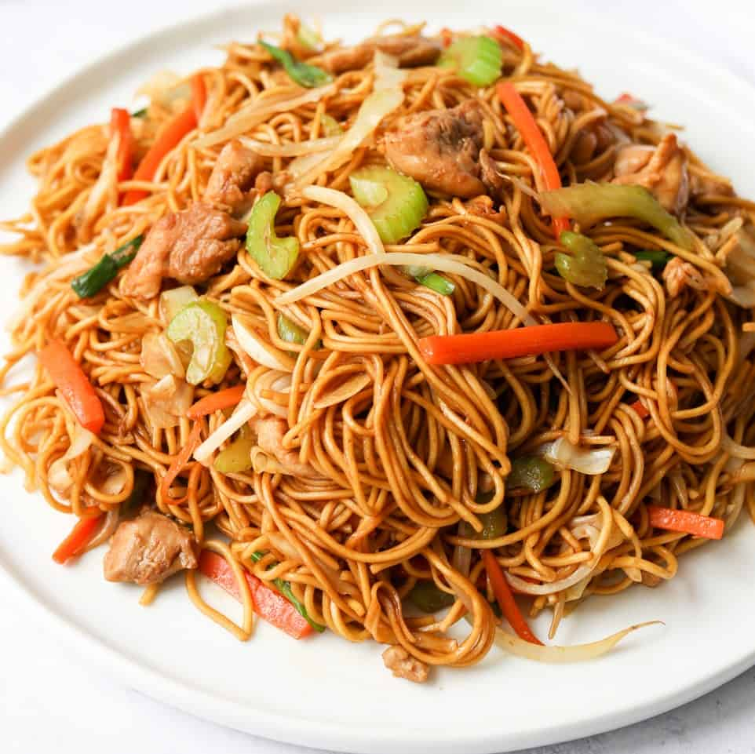

CHOW MEIN RECIPE

Ingredients:
- Chow Mein noodles: 250 grams
- Vegetable oil: 2 tablespoons
- Garlic cloves: 2, minced
- Ginger: 1-inch piece, finely chopped
- Onion: 1 medium, sliced
- Assorted vegetables (bell peppers, carrots, cabbage, etc.): 2 cups, julienned
- Protein of choice (chicken, shrimp, tofu, etc.): 250 grams, thinly sliced or cubed (optional)
- Soy sauce: 3 tablespoons
- Vinegar: 1 tablespoon
- Salt to taste
- Black pepper: ½ teaspoon
- Spring onions: for garnish
Method:
- Cook the Chow Mein noodles according to package instructions until al dente. Drain and set aside.
- Heat vegetable oil in a wok or large pan over high heat.
- Add minced garlic and chopped ginger. Sauté for a few seconds until fragrant.
- Add sliced onion and stir-fry until translucent.
- Add assorted vegetables and protein (if using). Stir-fry on high heat until vegetables are slightly tender and protein is cooked through.
- Add the cooked Chow Mein noodles to the pan.
- Pour soy sauce and vinegar over the noodles. Season with salt and black pepper. Toss everything together until well combined and heated through.
- Garnish with chopped spring onions and serve hot.
Chow Mein is Ready to Serve!!!